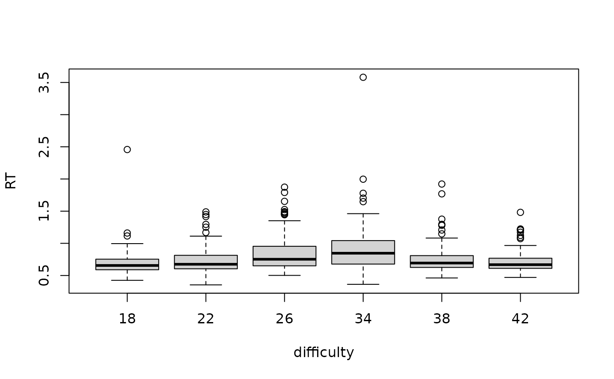

Abstract
An important element of reproducible research is documenting all steps of the process, including data analysis. This vignette, developed for theRepPack27 package (an example of
ANOVA for 2-way between-subjects on RT data)..
This vignette illustrate the use of the dataset and utility functions
included in the package RepPack27. I collected this data to
look at differences in RT when observing target localization across 3-D
space in a virtual world. The objective of this data is to observe a
depth effect across various conditions. These conditions can appear more
or less difficult which may prioritize attention or perception
differently across near and far space (i.e., evident through RT
differences)
To load the data, use the function data():
data("RTDATA")To inspect the dataframe, use the function summary()
summary(RTDATA)
#> Picture difficulty depth side elevation participant
#> Length:672 18:112 far :336 left :336 down:336 01:672
#> Class :character 22:112 near:336 right:336 up :336
#> Mode :character 26:112
#> 34:112
#> 38:112
#> 42:112
#> RT Correct
#> Min. :0.3541 0: 13
#> 1st Qu.:0.6167 1:659
#> Median :0.7040
#> Mean :0.7758
#> 3rd Qu.:0.8467
#> Max. :3.5806The data frame consists of 10 variables. The variable definitions can be consulted in the help file:
?RTDATAThe dataframe includes information for RT per trial depending on the
depth the lines were presented (near or far) but also based on the
orientation difficulty (3 levels of difficulty that are categorized by
individual orientations: 18,22,26,34,38,42; these were all compared to a
reference of 30). We can plot generally RT patterns across all 6
orientations.We create a simple boxplot x = difficulty
which is meant to summarize difficulty and y = RT for the
reaction times:
# Simple Boxplot observing RT differences across the 6 difficulty levels (orientation)
plot(RT~difficulty,RTDATA)
Not suprisingly, RTs are largest (slowest) for the middle difficulties which are the most difficult. Orientations 26 and 34 are closest to the reference 30 which makes it most difficult to discriminate.
Check the descriptive statistics of RT data across Depth and Difficulty:
#This will get us a summary of RT across difficulty and depth in seconds.
with(RTDATA, tapply(RT, list(difficulty,depth),mean))
#> far near
#> 18 0.6665758 0.7213841
#> 22 0.7322394 0.7331463
#> 26 0.8135816 0.8739083
#> 34 0.9366619 0.8959890
#> 38 0.7171229 0.7947176
#> 42 0.7025422 0.7217128Now we can compute an ANOVA to observe the effect across the two independent variables (depth, difficulty; x,y) on our dependent variable (RT; z):
?ANOVA2_BW
x <- RTDATA$difficulty
y <- RTDATA$depth
z <- RTDATA$RT
ANOVA2_BW(x,y,z)
#> Df Sum Sq Mean Sq F value Pr(>F)
#> x 5 4.18 0.8370 12.547 1.18e-11 ***
#> y 1 0.14 0.1383 2.073 0.150
#> x:y 5 0.27 0.0546 0.818 0.537
#> Residuals 660 44.03 0.0667
#> ---
#> Signif. codes: 0 '***' 0.001 '**' 0.01 '*' 0.05 '.' 0.1 ' ' 1This analysis showed us for RT, there was a significant main effect of difficulty; harder orientations were slower than easier orientations. There was no main effect of target depth, however this will likely become significant with increased sample size. Important to remember this remains just a small subset of the overall data.